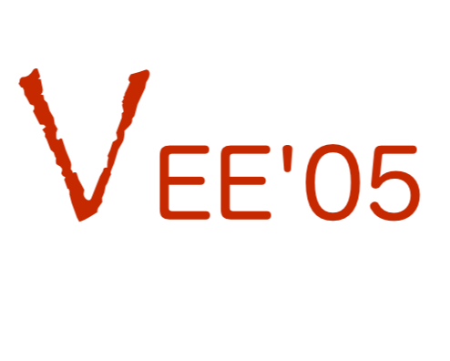

|  | Call for Papers First ACM/USENIX International
Conference |
|
 |
joining ACM
SIGPLAN IVME and USENIX VM and in cooperation with ACM SIGOPS |
|
held in conjunction
with PLDI 2005 |
| Research results on virtual execution engines are scattered among a number of different venues in the languages (VM, PLDI, OOPSLA, IVME, ICFP), operating systems (SOSP, OSDI), and architecture (ASPLOS, CGO, PACT) communities. The organizers of the USENIX VM Symposium and the ACM SIGPLAN IVME Workshop felt the needs of the community would be better served by having a single first-rate conference address a breadth of issues related to virtual execution environments. Thus, we are happy to announce a new annual event: the ACM/USENIX Conference on Virtual Execution Environments (VEE). The initial instantiation of VEE will be co-located with PLDI 2005 in Chicago, Illinois. Future instances of the conference will be held jointly with OS or architecture conferences. | ||||
| VEE promises to be a unique forum that brings together leading practitioners and researchers in the broad area that includes topics such as interpreters, high-level language virtual machines (JVM, CLR, etc.), machine emulators, translators, and machine simulators. Papers are solicited in areas including, but not limited to, the following: | ||||
|